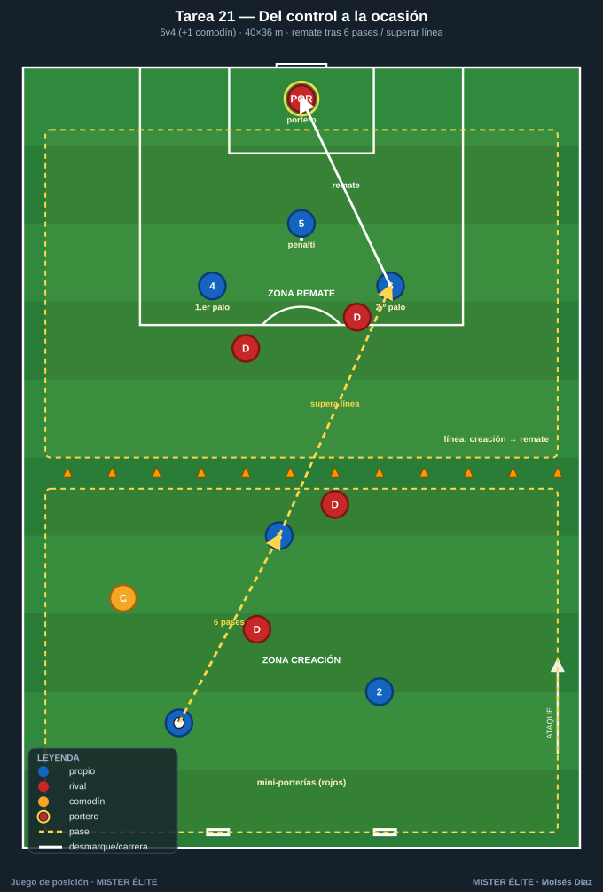
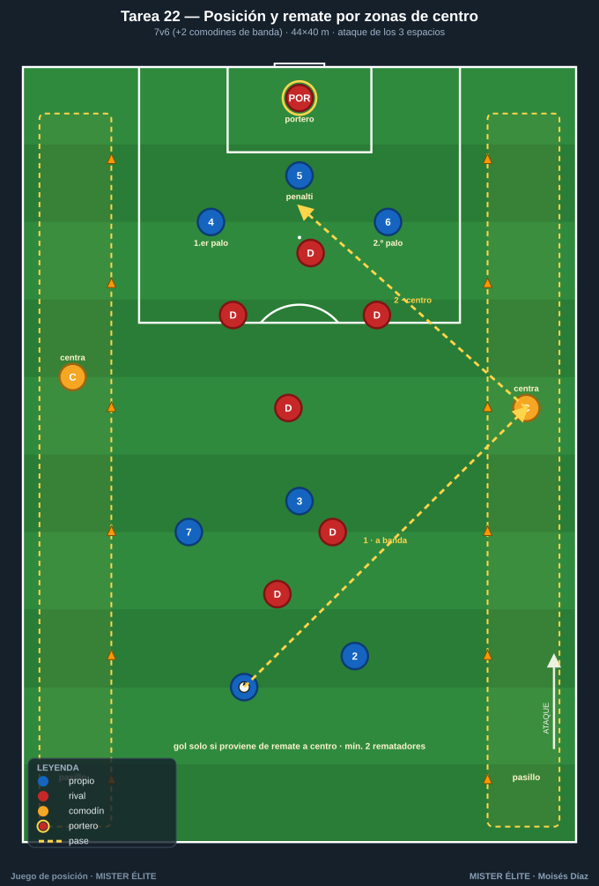
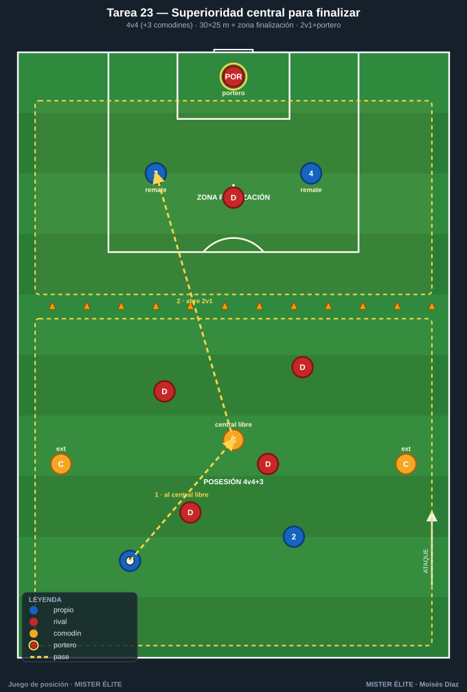
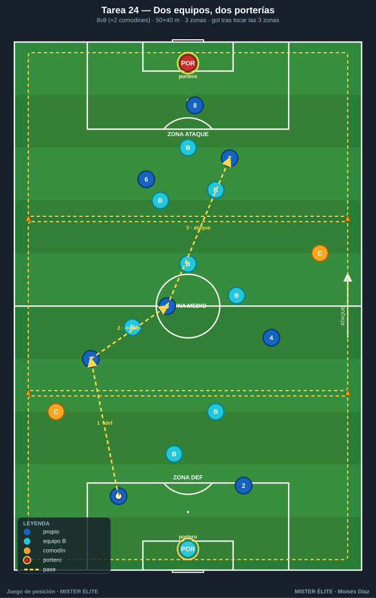
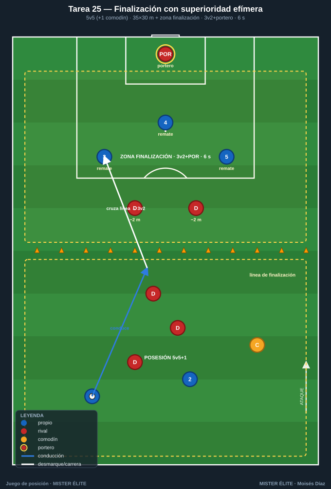

Familia 5 · Posesión para finalizar (T21–25)
Notación: poseedores azules, defensores rojos, comodines ámbar. La posesión es el medio, el remate es el fin. Estas tareas exigen posición + remate: el gol vale si se ha construido (romper línea, ocupar el área), no "de churro".
Tarea 21 — Del control a la ocasión (posesión + remate a portería real)
Objetivo. Convertir la superioridad en posesión en finalización; entender que la posesión es medio, el remate es fin.
Organización. - Relación: 6v4 + 1 comodín (ámbar, con el poseedor). 1 portero en portería reglamentaria. - Medidas: 40×36 m. Portería grande con portero en un fondo; en el opuesto, 2 mini-porterías (1 m, sin portero) para los rojos. - Material: portería + portero, 2 mini-porterías, petos, balones junto a la portería grande para reposición.

Desarrollo. Los azules mantienen y progresan para rematar a la portería grande con portero. Condición para rematar: mínimo 6 pases o haber superado una línea media (zona de creación → zona de remate). Si los rojos roban, atacan a las 2 mini-porterías.
Provocaciones (medibles). - Gol válido solo tras cumplir la condición (6 pases o superación de línea). - Remate de primera tras centro/pase de la última zona = vale doble. - Rematar en ≤8 s desde que se supera la línea media = +1.
Variantes (fácil → difícil). 1. Fácil: 6v3 + comodín, condición de 4 pases. 2. Media: base (6v4+1). 3. Difícil: 5v5 sin comodín, condición de superar línea y tocar en banda antes de rematar.
Coaching. - Diferenciar el ritmo de circulación (paciencia) del de finalización (explosión). - El último pase: al pie de remate, con ventaja, no "de seguridad". - Ocupar el área en 3 alturas (1.er palo, 2.º palo, punto de penalti).
Duración. 4 series de 4 min. ≈ 22 min con reposiciones.
Tarea 22 — Posición y remate por zonas de centro (juego por bandas a finalizar)
Objetivo. Usar la amplitud para finalizar; posesión interior → liberar banda → centro → remate.
Organización. - Relación: 7v6, con 2 comodines de banda (ámbar) fijos en pasillos exteriores. 1 portero. - Medidas: 44×40 m. 1 portería con portero; dos pasillos de banda de 5 m con conos donde solo entran los comodines y disponen de toque libre para centrar. - Material: portería + portero, conos de pasillo, petos, balones.

Desarrollo. Azules circulan en zona interior. Para finalizar deben dar el balón a un comodín de banda, que centra al área. El gol solo cuenta si proviene de remate a un centro (no de jugada interior directa). El comodín no es presionado dentro de su pasillo (premia el timing del remate).
Provocaciones (medibles). - Gol de cabeza o de primera tras centro = 2 puntos; tras controlar el centro = 1 punto. - Mínimo 2 rematadores entran al área en el centro o el gol no vale. - Dos goles seguidos por la misma banda: el segundo no puntúa (obliga a variar).
Variantes (fácil → difícil). 1. Fácil: 2 comodines por banda, centro sin oposición. 2. Media: base. 3. Difícil: añadir 1 defensor central rojo que puede entrar al pasillo a tapar el centro (7v7).
Coaching. - Timing de la llegada al área: salir desde atrás hacia el balón. - Tipos de centro según el rematador (raso al 1.er palo, tenso, atrás). - Ataque de los 3 espacios del área coordinado.
Duración. 4 series de 4 min. ≈ 22 min.
Tarea 23 — Superioridad central para finalizar (4v4+3 que termina en portero)
Objetivo. Llevar el clásico 4v4+3 hasta la portería: usar al hombre libre del centro para crear el último pase.
Organización. - Relación: 4v4 + 3 comodines (ámbar; 2 exteriores + 1 central). - Medidas: 30×25 m + zona de finalización de 8 m al fondo con portería y portero. - Material: portería + portero, conos que separan posesión y finalización, petos, balones.

Desarrollo. En la zona de posesión se juega 4v4+3 buscando al hombre libre. Cuando los azules logran un pase filtrado al comodín central o 6 pases, se abre la zona de finalización: 2 azules entran a rematar 2v1 + portero (un rojo defiende). Tras el remate, vuelve a empezar la posesión.
Provocaciones (medibles). - La finalización se "desbloquea" solo con la condición (pase al central libre o 6 pases). - Finalizar en ≤6 s desde que se abre la zona = vale doble. - El defensor solo sale a por el balón cuando este cruza la línea (ventaja inicial al atacante).
Variantes (fácil → difícil). 1. Fácil: 2v0 + portero en finalización. 2. Media: 2v1 + portero (base). 3. Difícil: 3v2 + portero y condición de pase al central obligatoria.
Coaching. - El hombre libre central como gatillo de la finalización. - Transición posesión→ataque: el primer apoyo tras abrir la zona ya es de progresión. - Definición: portería corta, primer toque orientado a portería.
Duración. 5 series de 3 min, rotando rematadores. ≈ 20 min.
Tarea 24 — Dos equipos, dos porterías: posesión orientada a finalizar (juego direccional completo)
Objetivo. Integrar todo: posesión con dirección, progresión y finalización en partido reducido con 2 porterías y porteros.
Organización. - Relación: 8v8 + 2 comodines (ámbar) que juegan con quien ataca (uno por mitad). - Medidas: 50×40 m, 2 porterías con portero. - Material: 2 porterías + 2 porteros, petos (2 colores + 2 ámbar), conos para 3 zonas (defensa–medio–ataque), balones en porterías.

Desarrollo. Partido direccional: cada equipo ataca su portería; los comodines dan superioridad permanente al poseedor. Condición de finalización: para que el gol valga, el equipo debe haber tenido el balón controlado en las 3 zonas en la misma posesión (obliga a construir). Reposiciones siempre desde el portero (trabaja la salida).
Provocaciones (medibles). - Gol estándar (3 zonas tocadas) = 1 punto. - Gol tras superar línea con pase entre líneas + finalización en ≤10 s = 2 puntos. - Cada equipo alterna el portero que inicia; los comodines no pueden estar en la misma mitad.
Variantes (fácil → difícil). 1. Fácil: sin condición de 3 zonas (libre) para calentar. 2. Media: condición de 3 zonas (base). 3. Difícil: 3 zonas + mínimo 1 cambio de orientación antes del gol.
Coaching. - Construir desde el portero con paciencia, acelerar al superar líneas. - Ocupar el campo para finalizar sin quedar expuestos a la transición rival. - La cadena completa: salida limpia → progresión → finalización.
Duración. 3 bloques de 6 min, 2 min descanso. ≈ 24 min.
Tarea 25 — Finalización con superioridad efímera (posesión que crea el 3v2 final)
Objetivo. Crear y explotar inmediatamente una superioridad de finalización antes de que el rival se reorganice; del control a la ocasión en pocos segundos.
Organización. - Relación: 5v5 + 1 comodín en zona de posesión; al finalizar se genera un 3v2 + portero. - Medidas: 35×30 m de posesión + zona de finalización de 12 m con portería y portero. - Material: portería + portero, conos de zona, petos, balones de reposición rápida.

Desarrollo. 5v5+comodín en la zona de posesión. Cuando un azul conduce cruzando la línea de finalización, se desbloquea el ataque: 3 atacantes vs 2 defensores + portero, pero los defensores arrancan 2 m por detrás (superioridad efímera real). El ataque tiene 6 s para rematar desde que se cruza (cronómetro del coach).
Provocaciones (medibles). - Reloj de 6 s para finalizar el 3v2 (obliga a resolver rápido). - Gol con ≤2 toques del rematador = vale doble. - Si los defensores recuperan antes del remate, contra a 2 mini-porterías en el otro fondo.
Variantes (fácil → difícil). 1. Fácil: 3v1 + portero, 8 s. 2. Media: 3v2 + portero, 6 s (base). 3. Difícil: 3v3 + portero, 5 s, con un defensor pudiendo salir antes.
Coaching. - Atacar la superioridad antes de que llegue el repliegue: velocidad de decisión. - Fijar a un defensor para liberar al tercero (2v1 dentro del 3v2). - Primer toque siempre hacia portería.
Duración. 5 series de 3 min rotando, 60 s descanso. ≈ 20 min.
MISTER ÉLITE — Moisés Díaz · Familia 5 · Posesión para finalizar.